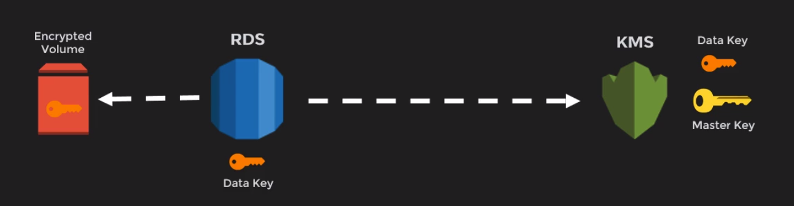

8. Databases¶
RDS¶
AWS RDS (Relational Database Service):
- MS SQL Server (port 1433) (up to 16TB of storage when using the Provisioned IOPS and General Purpose SSD storage)
- Oracle. Includes license model (BYOL - Bring your own license)
- MariaDB
- MySQL (port 3306)
- PostgreSQL (port 5432)
- Amazon Aurora. MySQL and PostgreSQL compatibility. No free tier. This is up to 5X faster than a traditional MySQL database
Some features:
- Enable deletion protection: delete require this feature disabled. if enable, modify to disable first
- Multi-AZ for disaster recovery and high availability. By default in production RDS. Primary host replicates to a secondary host when failover. Enable multiAZ impact to the RDS instance if running
host -t NS database_endpoint # Query DNS Records on Linux nslookup database_endpoint # Query DNS Records on Windows
- There is no mulit-region RDS. AWS does have multi-AZ RDS.
- Backup retention from 0 days (disable) to 35 days
- Read Replicas for performance improvement. Quering read replica can have a delay of less than a minute. They are usefull when:
- scaling due to excess read traffic
- source db unavailable
- reporting and data warehousing
- disaster recovery
- hosting a cross region with lower latency
- MS SQL Server cannot be read replica
Create read replicafrom the RDS instance (must have backups turned on and check the option Public accesible)- A read replica can be promoted as a standalone instance. Note that the promotion process is irreversible.
- Use of AWS EBS volumes for database and log storage. Only Aurora uses its storage system.
- We can manage RDS instances (CPU and Memory) using AWS CLI, AWS RDS API or management console.
- RDS run on VM, but login is not allowed.
- Patching RDS is Amazon's responsability
Scaling
- vertical scaling (storage, CPU, memory or network) with a new RDS instance of DB instance class. Instance may shutdown
- multiAZ takes more time for vertical scaling, but RDS is shutted down less time than working on a single AZ
- horizontal scaling with read replicas
- scaling with AWS EBS storage
Backup options
- backups in S3 are stored in an RDS own bucket.
- backup is for the db host, not only the databases.
- only the differences are stored in the new snapshot.
- in multiAZ there should not be impact. In single AZ, I/O is suspend from few seconds to few minutes.
-
restoring a backup create a new RDS instance. you cannot restore to an existing db instance.
retain DB Parameter Group and SG. Inbound rules should allow the connection using the DB port
-
Backup types:
- automated backup: in a multiAZ scenario, data is backed up dialy taking a snapshot from the EBS volume of the secondary RDS instance
- scheduled window
- retention
- data can be restored to point in time on intervals of 5 minutes based on transactions logs.
- manual snapshots.
Take DB Snapshotfrom RDS instance- kept till deleted
- only recommended before large changes
- we can copy snapshot to different regions (crossregion copy)
- we can share snapshots as public or private with other aws accounts
- automated backup: in a multiAZ scenario, data is backed up dialy taking a snapshot from the EBS volume of the secondary RDS instance
To mitigate the slow restore process:
- Restore a RDS instance with high I/O capacity
- Maximize the I/O during the restore process
Pricing
- DB Engine and version
- License model
- DB Engine class
- Multi-AZ: the price is twice
-
Storage type and allocation
-
Instance hours
- Database Storage: EBS VS Aurora
- Size of bakcup storage
- Data transfer out
- Data transferred between AZs for replication of Multi-AZ deployments is free
Reserve instance when long terms for both Multi-AZ and Single-AZ configurations
Security
- Network isolation, using VPC:
- Private subnet
- Security group (firewall)
- Public accessibility (turn off)
- ClassicLink
- Direct Connect: dedicated line from on premise to AWS to improve the network connection
- VPC Peering
- IAM for access control:
- Do not use AWS root credentials
- IAM for RDS management
- MFA for extra level of protection
- Integrated security
- Active directory for SQL Server
- IAM Authentication MySQL, PostgreSQL, Aurora
-
Encryption at Rest:
- must be defined at creation or restoration time
- it is free to encrypt data using KMS (Key Management System) and AES-256
- encryption is replicated to all nodes, backups and snapshots
- cannot decrypt once encrypted
-
two tier encryption: enable key rotation

-
SSL for db conectivity
Monitoring
- RDS sends metrics to
CloudWatch - 15-18 metrics based on the instance class (CPU, free storage space, network traffic, database connections and IOPS)
- Performance Insights is a free database performance dashboard, but it is not available for db.t2 instances. Only Aurora, MySql and PostgreSql support.
- AWS RDS Events to be notified when events occurs
Script to test monitoring:
CREATE TABLE scale_data ( section NUMERIC NOT NULL, id1 NUMERIC NOT NULL, id2 NUMERIC NOT NULL ); INSERT INTO scale_data SELECT sections.*, gen.* , CEIL(RANDOM()*100) FROM GENERATE_SERIES(1, 300) sections, GENERATE_SERIES(1, 900000) gen WHERE gen <= sections * 3000;
How to create an RDS instance (PostgreSQL)¶
- Download pgAdmin and install -> http://127.0.0.1:54689/browser
- Create a VPC using the wizard:
- Select VPC with Public and Private Subnets
- Select all default settings but Elastic IP Allocation ID. If not found, copy and paste
-
Configure RDS subnet groups:
- Create DB Subnet groups (public and private)
DB Subnet Group doesn't meet AZ coverage requirement. Please add subnets to cover at least 2 AZs. Current coverage: 1
- Create a new public (10.0.2.0/24) and private (10.0.3.0/24) subnets in a different AZ. Then try to create the subnet group again
- Edit route table association for the two new subnets. private subnets with NAT and public subnets with IGW (internet gateway)
-
From
RDS, clickCreate Databasebutton - Select PostgreSQL engine type, previous to last version, free tier template, db.t2.micro as db instance class, no multi-AZ
- Select the VPC created above and the public subnet group. Public access
- Security groups are required for publicly accessible databases. Create new VPC security group, so port 5432 will be opened to allow the PostgreSQL access.
- Run pgAdmin and create a new server Lab1 using the RDS endpoint as hostname (
mypostgresql.cmr9irlg1qe3.us-east-1.rds.amazonaws.com), and the user and pwd

CREATE TABLE test_data ( section NUMERIC NOT NULL, id1 NUMERIC NOT NULL, id2 NUMERIC NOT NULL ); INSERT INTO test_data SELECT sections.*, gen.*, CEIL(RANDOM()*100) FROM GENERATE_SERIES(1, 30) sections, GENERATE_SERIES(1, 90) gen WHERE gen <= sections * 3000;
How to create a secured RDS instance¶
Create a *parameter group*from RDS with family postgres10 named PostgresSSL.-
Edit PostgresSSL parameter group to enable and enforce ssl (ssl and rds.force_ssl = 1)
Encryption at rest is not enabled for a db.t2.micro, so a dev/test RDS is required
-
Set No Public Accessible and enable encryption
- Edit SG rules filling our private subnet (10.0.1.0/24 and 10.0.3.0/24) as source for PostgreSQL type
- From IAM, create a new Lambda Role using policy
AWSLambdaVPCAccessExecutionRolenamed LambdaVPC - From Lambda,
create functioncalled ConnectSecureRDS with runtime as node.js 10.x and LambdaVPC role - Select our VPC with private subnets and the SG already edited with inbound/outbound rules filling our private subnet (10.0.1.0/24 and 10.0.3.0/24) as source for PostgreSQL type
-
Upload the .zip file for the function code:
const { Client } = require('pg') // import node.js Postgres library exports.handler = function(event, context, callback) { const client = new Client() client.connect() client.query('SELECT $1::text as message', ['Hello world!'], (err, res) => { console.log(err ? err.stack : res.rows[0].message) // Hello World! client.end() callback(err, res); }); }
-
Edit Environment variables
- PGHOST=RDS instance endpoint
- PGUSER=acgrds
- PGPASSWORD=test123123
- PGDATABASE=ACGRDS
- PGSSLMODE=require
- Test the lambda function
- Change VPC and test again
- Change VPC subnet and test again.
- Remove PGSSLMODE variable and test again.
How to create an RDS instance for WordPress¶
Create DatabasefromRDS.- Select MySQL engine type, free tier template (without Multi-AZ) and fill the database name (db instance identifier)
-
Set initial db name in the additional configuration.
- If you do not specify a database name, Amazon RDS does not create a database.
- When creating an RDS instance, you can select the AZ into which you deploy it.
- automated backups are enabled by default, till 35 days
-
Create a new EC2 instance with our WebDMZ security group, our key pair and the following advanced details:
#!/bin/bash yum install httpd php php-mysql -y amazon-linux-extras install -y php7.2 cd /var/www/html wget https://wordpress.org/wordpress-5.4.1.tar.gz tar -xzf wordpress-5.4.1.tar.gz cp -r wordpress/* /var/www/html/ rm -rf wordpress rm -rf wordpress-5.4.1.tar.gz chmod -R 755 wp-content chown -R apache:apache wp-content service httpd start chkconfig httpd on
-
Allow connection between EC2 and RDS clicking on defult VPC security group,
inbound rules, edit to add a rule with:- MySQL/Aurora type
- protocol TCP
- port 3306
- WebDMZ security group
-
Browse to the EC2 public IP and see the wordpress home page. Fill db name, user name, pwd and RDS endpoint (rnietoe.cmr9irlg1qe3.us-east-1.rds.amazonaws.com)
-
Create the wp-config.php file manually:
ssh ec2-user@52.87.161.80 -i rnietoe.pem cd /var/www/html nano wp-config.php # here paste wp-config.php from the wordpress home page. Ctrl+X to save it
-
From the wordpress home page,
Run the installation, fill the same credentials andInstall WordPress - Login to wordpress
- Configure a ELB target group to set WordPress settings URL with a DNS address instead of a public IP
Finally we create a EC2 instance image, like a snapshot. this is called AMI (Amazon Machine Image)
How to create a fault-tolerance wordpress app¶
- Create
Launch Configurationnamed MyLaunchConfigurationGroup - select AMI MyworkPressTemplate
- select instance type t2.micro
-
advance settings:
#!/bin/bash yum update -y -
select our Security group (virtual firewall) and key pair
-
Create
Auto Scaling Groupnamed MyAutoScalingGroup - Select MyLaunchConfigurationGroup
- Select all subnets (AZ)
- Enable ELB and select my target group
- Scale between 2 and 3 instances (group size)
- Set a scaling policy. for example, when CPU is 90%
- notifications and tags not required here
- Select the ASG (Auto Scaling Group) created and see the
Activitytab. Two instances are created. - Browse to the ELB DNS adress and create new post in wordpress . Delete instances, wait ASG create new instances and check the post is still there
Amazon Aurora¶
- Multi-Region deployment will best ensure global availability.
- Hight performance with a low cost. 2-3x faster thant postgreSQL and 5x faster than MySQL
- Move Logging and Storage layers into a multi tented scale out database optimized service
- Storage from 10gb to 64tb
- Max of 32 CPUs and 244 GiB RAM
- Continuous backup to S3
- Aurora DB Cluster till 15 read-replicas
- Cluster endpoint connection allow write operations
- Reader endpoint connection allow read operations
- Custom endpoint connection allow load balancer
- Instance endpoint connection to a specific instance
- Aurora global databases
- primary region - read and write
- secondary region - read only. Promoted when failure
- Aurora store by default 6 copies of my data (3x2). Default availability is a minimum of 3 AZs with 2 db copies in each one
Create Amazon Aurora database with PostgreSQL compatibility from RDS
- Three instances are created:
- regional - with writer and read endpoints
- writer
- reader
- Create aurora read replica from actions (writer and reader node)
Aurora Serverless¶
- You specify the minimum and maximum amount of resources needed, and Aurora scales the capacity based on database load. This is a good option for intermittent or unpredictable workloads.
- only an endpoint is created
//test lambda function var mysql = require('mysql'); exports.handler = (event, context) => { var connection = mysql.createConnection({ host : '', user : '', password : '' }); connection.connect(function(err) { if (err) throw err; console.log("Connected!"); }); connection.query("SELECT 'Hello World!';", function (err, result) { if (err) throw err; console.log(result); context.succeed('Success'); }); };
DynamoDB¶
DynamoDB (Non Relational Databases - faster due to small transactions) is a key-value and document database that delivers single-digit millisecond performance at any scale.
DynamoDB auto scaling uses the AWS Application Auto Scaling service to dynamically adjust provisioned throughput capacity on your behalf, in response to actual traffic patterns.
DynamoDB allows for the storage of large text and binary objects, but there is a limit of 400 KB for the combined Value and Name
- Data is stored on SSDs (Solid State Drives).
- DynamoDB provide automatic replication across AZs. It is a regional service, there is no need to explicitly create a multi-AZ deployment.
- DynamoDB is distributed across 3 geographically distinct datacentres by default
- DAX (DynamoDB Accelerator) is an advanced DynamoDB
- There will always be a charge for:
- provisioning read and write capacity
- the storage of data: $0.25Gb per month
Consistency types (database will not be consistent in one moment, but it will be in another moment):
- Eventual consistent reads (default) sample of 2 seconds
- Strongly consistent reads. sample of less than 1 second. some disadvantages such as :
- read might not be available if there is a network delay or outage
- higher latency
- global secondary indexes not supported
- use of more throughput capacity
Create DynamoDB table:
Create a tableinstead of a database- Set table name and primary key
RedShift¶
Quick start to Deploy an Amazon Redshift data warehouse on the AWS Cloud for big data and analytics
- Amazon's Data WareHousing database (columnar data store) used for OLAP (OnLine Analytics Processing)
- Used for Business Intelligence
- availabled in 1 AZ
- single node of 160 gb up to 160tb
- $0.25 per hour or $1.000 per Tb per year
security:
- SSL transit encryption
- AES-256 storage encryption usin AWS KMS
not suited for streaming data
ElastiCache¶
Improve performance with in-memory cache for the most common queries:
- Memcached. Simplest model for implementation. hight performance. It does not offer a native encryption service
- Redis (muti AZ)
- Pub/Sub
- Sorted Sets
- In-Memory Data Store
- HIPPA or PCI-DSS compliance
ElastiCache is only a key-value store and cannot therefore store relational data.
Graph Databases¶
Amazon Neptune